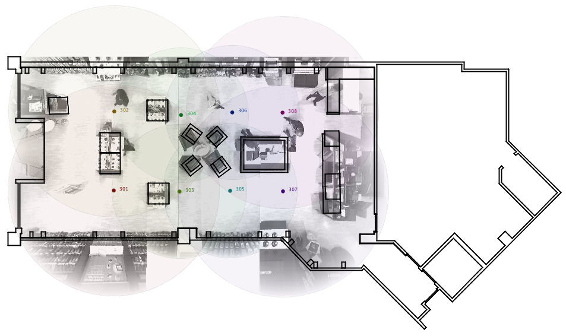

Rony Kubat is a recent PhD graduate from MIT. His research
focus has been at the crossroads of computer science, artificial intelligence, and cognitive
science—the modeling of human behavior in buildings in order to optimize their design performance.
(Learn more.)

The following is the abstract to Rony's doctoral thesis, entitled Will they buy?:
The proliferation of inexpensive video recording hardware and enormous storage capacity has enabled
the collection of retail customer behavior at an unprecedented scale. The vast majority of this data
is used for theft prevention and never used to better understand the customer. In what ways can this
huge corpus be leveraged to improve the experience of customer and the performance of the store?
This thesis presents Mimic, a system that processes video captured in a retail store into
predictions about customer proclivity to purchase. Mimic relies on the observation that aggregate
patterns of all of a store's patrons---the gestalt---captures behavior indicative of an imminent
transaction. Video is distilled into a homogenous feature vector that captures the activity
distribution by first tracking the locations of customers, then discretizing their movements into a
feature vector using a collection of functional locations---areas of the store relevant to the
tasks of patrons and employees. A time series of these feature vectors can then be classified as
predictive-of-transaction using a Hidden Markov Model.
Mimic is evaluated on a small operational retail store located in the Mall of America near
Minneapolis, Minnesota. Its performance is characterized across a wide cross-section of the model's
parameters. Through manipulation of the training data supplied to Mimic, the behavior of
customers in the store can be examined at fine levels of detail without foregoing the potential
afforded by big data.
Mimic enables a suite of valuable tools. For ethnographic researchers, it offers a technique
for identifying key moments in hundreds or thousands of hours of raw video. Retail managers gain a
fine-grained metric to evaluate the performance of their stores, and interior designers acquire a
critical component in a store layout optimization framework.
Before graduate studies, Rony was a science and technology advisor for a number of Hollywood
film productions, helping writers, directors, and production designers find technical authenticity and
inspiration. Rony holds a Masters in Computer Science, a B.S. in Mechanical Engineering and a
B.S. in Computer Science, all from MIT, and is a National Science Foundation Graduate Research
Fellow. He is the playwright of one of the world's first theater pieces performed by a human and robot
ensemble. Rony has been described by Wired Magazine as having a “steady low voice that could
pacify a riot,” and is a member of the Junkyard Wars team, the Geeks (3rd Place, US Season three).
Current CV (pdf).